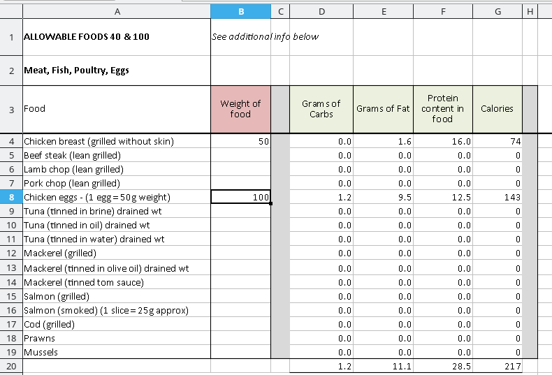
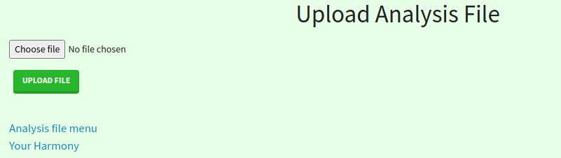
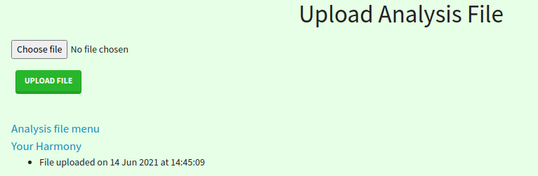
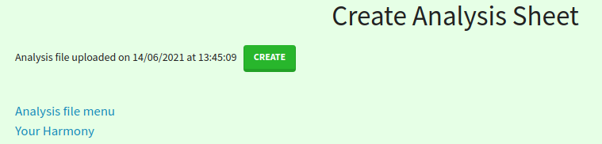
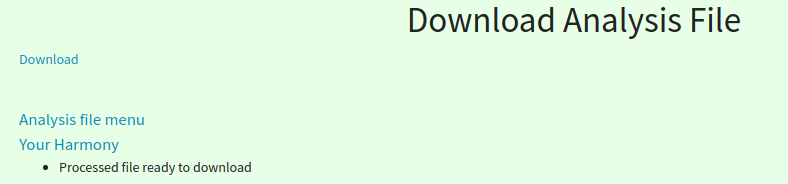
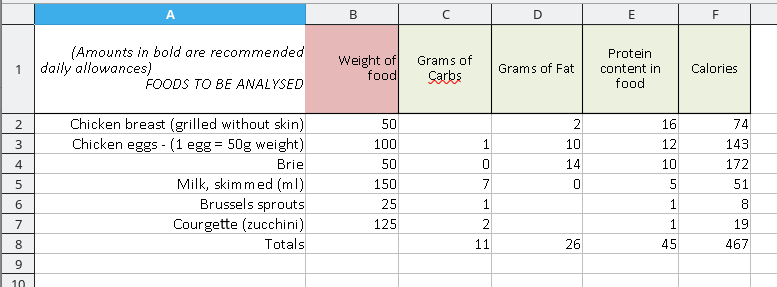
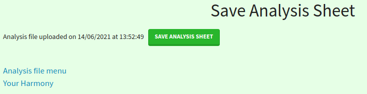

Dietry Analysis¶
Dietry analysis is based upon a Workbook that allows you to enter details of a recipe or meal, and to see the quqntiry of key nutritional variables that it contains.
The workbook contains a number of worksheets where common foodstuffs are collected under headings; for example, Meat,Fish,Poultry,Eggs and Principal Salad_Raw Veg.
Open the workbook and enter quantity (in grams or, in the case of condiments, in teaspoons). This will show against the item, the quantity of Carbs etc. that the item represents.
Uploading the Analysis file¶
In the Analysis file menu, click on the Upload analysis file link. This will take you to the Upload Analysis File page
Click on the Choose file and a system file chooser will open for you. Navigate to the file that you want and double-click on it or click on the Open button. The file name will appear. If all is correct, click on the Upload file button. If the file is uploaded successfully, you will see a confirmatory message.
Summarising the recipe or meal¶
To obtain the summary of a recipe or meal, make sure that the workbook containing your entries has been uploaded. Select Create analysis sheet from the Analysis file menu
Click on the Create button. If all is correct, you will see a confirmatory message and a download link.
This will download the workbook analysis.xlsx to your download folder. You may copy it or rename it to a place of your choosing. The workbook will contain all of the data that you entered into your original workbook and, in addition, the analysis worksheet will contain a summary of your entries.
Resetting the Workbook entries to zero¶
If you want to perform another analysis using the dame workbook, you are bale to reset all of the entires you made to zero. Make sure that the workbook that you wish to reset is uploaded (see xxx above).
Select Set quantities to zero from the Analysis file menu. Click on the Process button. If all is correct, you will see a confirmatory message and a download link. This will download the workbook analysis.xlsx to your download folder. You may copy it or rename it to a place of your choosing. The workbook will now contain no user data and you may use it to perform another analysis.
Save an Analysis¶
If you have a recipe or meal and you would like to save the analysis sheet you are able to download a workbook with just the Analysis worksheet. Make sure that the workbook containing your entries has been uploaded. Select Save analysis from the Analysis file menu
Click on the Save Analysis Sheet button. If all is correct, you will see a confirmatory message and a download link. This will download the workbook my_analysis.xlsx to your download folder. You may copy it or rename it to a place of your choosing.